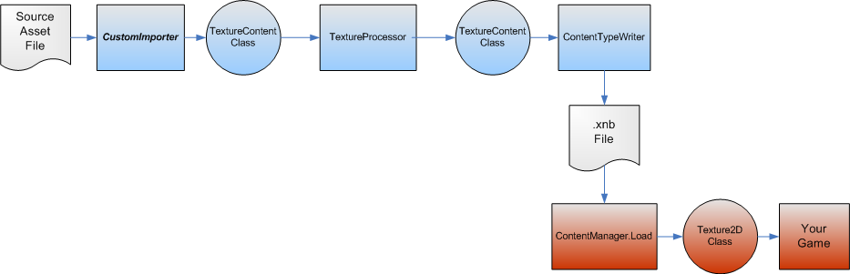
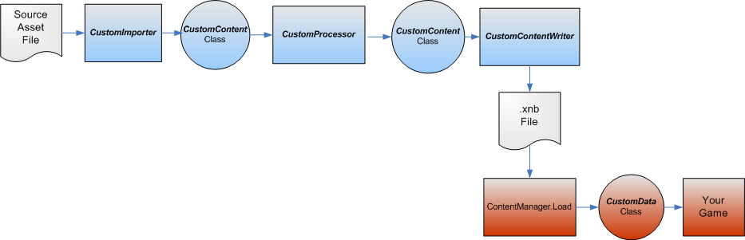

Loading Additional Content Types
MonoGame provides standard Content Pipeline components that import and process the most commonly used game asset file types. These file types include, for example, Content Importers for the Autodesk (.fbx) format and the DirectX (.x) format. A complete list of file types is available in the Standard Content Importers and Content Processors topic. Most digital Content creation (DCC) tools are capable of creating output in at least one of these standard formats.
Choosing to Customize
A custom Content Importer is required for game assets available only in formats unsupported by MonoGame standard Content Importers. One may already be available from a third party. Custom Content Importers can be developed by DCC vendors, game-engine developers, and interested game hobbyists. Once a custom Content Importer is installed on your computer, you can associate art files with the Content Importer to invoke it when you build the art files (see Adding a Custom Importer).
You may need to write your own custom MonoGame Content Pipeline components to:
- Support a new type of game asset or format from a DCC tool.
- Derive special-purpose content from another piece of content at the time the game is built.
Here are some typical scenarios, and a summary of which Content Pipeline components require customization.
| Component | When to customize | Output options |
|---|---|---|
| Content Importer |
|
|
| Content Processor |
|
|
| Content Loader |
|
|
Customization Scenarios
This section examines some typical examples where customization is needed, and illustrates which Content Pipeline components must be changed.
Supporting a New File Format
In this example, a nonstandard file format contains information that can be represented by a standard Content DOM type.

As illustrated, only a custom Content Importer that can read the nonstandard file format and output a Content DOM object (in this case, a TextureContent object) is required. The remainder of the Content Pipeline process can be performed by a standard Content Processor and Content Loader.
Creating Special-Purpose Data from Standard Objects
For this example, a texture object that represents a map of normalized vectors derived from the original texture object is created.
Since the texture is contained in a standard format for the game asset, a standard Content Importer can be used to create the TextureContent object. A custom Content Processor (NormalMapProcessor) creates the special-purpose data, but uses the standard TextureContent class to contain the result so that it can be loaded by the standard Content Loader.
Supporting Custom Data from a Nonstandard Game Asset
Illustrated in this example is a nonstandard game asset file containing data that does not correspond to any standard data types.

To read the nonstandard game asset file, a custom Content Importer is required that outputs a CustomContent object. Since the output of the Content Importer is a custom class, a custom Content Processor also is needed, and the ContentManager.Load method must be extended to support the custom data object.
See Also
© 2012 Microsoft Corporation. All rights reserved.
© 2023 The MonoGame Foundation.